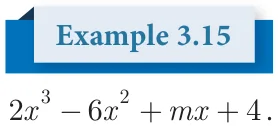

<!DOCTYPE html>
<html lang="en">
<head>
<meta charset="UTF-8">
<meta name="viewport" content="width=device-width,initial-scale=1">
<title>3.3 Remainder Theorem — Algebra</title>
<meta name="description" content="Class 9 Mathematics · Algebra · 3.3 Remainder Theorem">
<link rel="icon" href="data:image/svg+xml,<svg xmlns='http://www.w3.org/2000/svg' viewBox='0 0 100 100'><text y='.9em' font-size='90'>📘</text></svg>">
<link rel="stylesheet" href="../../../assets/book.css">
<link rel="stylesheet" href="https://cdn.jsdelivr.net/npm/katex@0.16.11/dist/katex.min.css" crossorigin="anonymous">
</head>
<body>
<header class="topbar">
<div class="topbar-in">
  <div class="crumb">
    <span class="c1"><a href="../../../index.html">Library</a> · <a href="../../index.html">Class 9 Mathematics</a></span>
    <span class="c2">Algebra · 3.3 Remainder Theorem</span>
  </div>
  <a class="tb-btn" data-nav="prev" href="../../03-algebra/05-exercise-3.2/index.html" title="Exercise 3.2">←</a>
  <details class="drawer"><summary class="tb-btn" title="Sections in this chapter">☰</summary>
<div class="drawer-panel"><div class="dh">Algebra</div><a href="../01-chapter-opener/index.html">Chapter opener; 3.1 Introduction</a><a href="../02-polynomials-3.2/index.html">3.2 Polynomials</a><a href="../03-exercise-3.1/index.html">Exercise 3.1</a><a href="../04-value-and-zeros-of-a-polynomial-3.2.2/index.html">3.2.2 Value and Zeros of a Polynomial</a><a href="../05-exercise-3.2/index.html">Exercise 3.2</a><a href="../06-remainder-theorem-3.3/index.html" aria-current="page">3.3 Remainder Theorem</a><a href="../07-exercise-3.3/index.html">Exercise 3.3</a><a href="../08-algebraic-identities-3.4/index.html">3.4 Algebraic Identities</a><a href="../09-exercise-3.4/index.html">Exercise 3.4</a><a href="../10-factorisation-3.5/index.html">3.5 Factorisation</a><a href="../11-exercise-3.5/index.html">Exercise 3.5</a><a href="../12-factorising-the-quadratic-polynomial-trinomial-of-the-type-3.5.2/index.html">3.5.2 Factorising the Quadratic Polynomial (Trinomial) of the type</a><a href="../13-exercise-3.6/index.html">Exercise 3.6</a><a href="../14-division-of-polynomials-3.6/index.html">3.6 Division of Polynomials</a><a href="../15-exercise-3.7/index.html">Exercise 3.7</a><a href="../16-factorisation-using-synthetic-division-3.6.3/index.html">3.6.3 Factorisation using Synthetic Division</a><a href="../17-exercise-3.8/index.html">Exercise 3.8; 3.7 Greatest Common Divisor (GCD)</a><a href="../18-exercise-3.9/index.html">Exercise 3.9</a><a href="../19-linear-equation-in-two-variables-3.8/index.html">3.8 Linear Equation in Two Variables</a><a href="../20-exercise-3.10/index.html">Exercise 3.10</a><a href="../21-exercise-3.11/index.html">Exercise 3.11</a><a href="../22-exercise-3.12/index.html">Exercise 3.12</a><a href="../23-exercise-3.13/index.html">Exercise 3.13</a><a href="../24-consistency-and-inconsistency-of-linear-equations-in-two-v-3.8.3/index.html">3.8.3 Consistency and Inconsistency of Linear Equations in Two Variables</a><a href="../25-exercise-3.14/index.html">Exercise 3.14</a><a href="../26-exercise-3.15/index.html">Exercise 3.15</a><a href="../27-summary/index.html">Points to Remember</a><a href="../28-ict-corner/index.html">ICT Corner-1</a></div></details>
  <a class="tb-btn" data-nav="next" href="../../03-algebra/07-exercise-3.3/index.html" title="Exercise 3.3">→</a>
  <button class="tb-btn" data-theme-toggle title="Toggle light / dark" aria-label="Toggle light or dark theme">◐</button>
</div>
<div class="progress"><span style="width:29.9%"></span></div>
</header>
<main class="wrap">
<div class="sec-head">
  <p class="eyebrow"><a href="../index.html">Chapter 3 · Algebra</a></p>
  <h1>3.3 Remainder Theorem</h1>
  <p class="sec-meta">Textbook pages 15–19 · 15 figures</p>
</div>
<article class="prose">
<p>In this section , we shall study a simple and an elegant method of finding the remainder. In the case of divisibility of a polynomial by a linear polynomial we use a well known theorem called Remainder Theorem.</p>
<figure class="fig wide"></figure>
<p>Significance of Remainder theorem : It enables us to find the remainder without actually following the cumbersome process of long division.</p>
<figure class="fig side-fig"></figure>
<h3 class="callout-h" id="s-note">Note</h3>
<ul class="qlist">
<li><span class="mk">(i)</span><span class="lt">If p(x) is divided by (x+a), then the remainder is p( - a)</span></li>
<li><span class="mk">(ii)</span><span class="lt">If p(x) is divided by (ax - b), then the remainder is p( ab )</span></li>
<li><span class="mk">(iii)</span><span class="lt">If p(x) is divided by (ax+b), then the remainder is p( - ba )</span></li>
</ul>
<figure class="fig table-fig wide"></figure>
<figure class="fig"></figure>
<p>Without actual division , prove that f(x) \(= 2x - 6x + 3x + 3x - 2\)</p>
<p>is exactly divisible by \(x - 3x + 2\)</p>
<h4 class="callout-h" id="s-solution">Solution :</h4>
<div class="mathblock"><p>Let f(x) \(= 2x - 6x + 3x + 3x - 2\)</p></div>
<div class="mathblock"><p>g(x) \(= x - 3x + 2\)</p></div>
<div class="mathblock"><p>\(= x - 2x - x + 2 =\) x^x \(- 2h- 1^x - 2h =\) ^x \(- 2^hx - 1h\)</p></div>
<p>we show that f(x) is exactly divisible by (x \(- 1)\) and (x \(- 2)\) using remainder theorem</p>
<div class="mathblock"><p>\(f(1) = 2^1h - 6^1h + 3^1h + 3^1h- 2\)</p></div>
<div class="mathblock"><p>\(= 2 - 6 + 3 + 3 - 2 = 0\)</p><p>\(f(2) = 2^2h - 6^2h + 3^2h + 3^2h- 2\)</p></div>
<div class="mathblock"><p>\(= 32 - 48 + 12 + 6 - 2 = 0\)</p></div>
<p>` f(x) is exactly divisible by (x \(- 1)\) (x \(- 2)\)</p>
<p>i.e., f(x) is exactly divisible by \(x - 3x + 2\)</p>
<p>If p(x)is divided by (x -a) with the remainder p a( ) \(= 0\) , then (x -a)is a factor of p(x). Remainder Theorem leads to Factor Theorem.</p>
<h3 id="s-3-3-1-factor-theorem">3.3.1 Factor Theorem</h3>
<p>If p(x)is a polynomial of degree \(n ^{3}\) 1and ‘a’ is any real number then</p>
<ul class="qlist">
<li><span class="mk">(i)</span><span class="lt">p a( ) \(= 0\) implies (x -a) is a factor of p(x).</span></li>
<li><span class="mk">(ii)</span><span class="lt">(x -a) is a factor of p(x) implies p a( ) \(= 0\) .</span></li>
</ul>
<p>Proof</p>
<p>If p(x) is the dividend and (x -a) is a divisor, then by division algorithm we write, p(x) = (x \(- a)q(x)+ p\) a( ) where q(x) is the quotient and p a( ) is the remainder.</p>
<ul class="qlist">
<li><span class="mk">(i)</span><span class="lt">If p a( ) \(= 0\), we get p(x) = (x - a)q(x) which shows that ( - ) is a factor of p(x).</span></li>
<li><span class="mk">(ii)</span><span class="lt">Since (x -a)is a factor of (p x), p(x) = ( - ) ( )for some polynomial g(x).</span></li>
</ul>
<p>In this case p a( ) = (a - a)g(a)</p>
<figure class="fig"></figure>
<div class="mathblock"><p>\(= 0 \times\) g(a) \(= 0\)</p></div>
<p>Hence, p a( ) \(= 0\), when (x -a)is a factor of p(x).</p>
<h4 class="callout-h" id="s-note">Note</h4>
<div class="mathblock"><p>z (x -a) is a factor of p(x), if p(a) \(= 0\) (x \(- a = 0\), \(x =\) a) z (x + a) is a factor of p(x), if p( - a) \(= 0\) (x+a \(= 0\), \(x = -\) a)</p></div>
<p>   \(^{z} (ax+b)\) is a factor of p(x), if p \(- \frac{b}{a}\)  \(= 0\)  ax \(+b = 0\), ax \(= - b\), \(x = - \frac{b}{a}\)    \(^{z}\) (ax - b) is a factor of p(x), if p \(\frac{b}{a}\)  \(= 0\)  ax \(- b = 0\), ax \(= b\), \(x = \frac{b}{a}\) </p>
<p>z (x - a) (x - b) is a factor of p(x) , if p(a) \(= 0\) and p(b) \(= 0\)   \(x = a\) or \(x =\) b</p>
<div class="mathblock"><p> \(x - a = 0\) or \(x - b =\) 0</p></div>
<p>Show that (x \(+ 2)\) is a factor of \(x - - +\)</p>
<figure class="fig side-fig"></figure>
<h4 class="callout-h" id="s-solution">Solution</h4>
<figure class="fig"></figure>
<p>Let ( ) \(= - - +\) By factor theorem, (x \(+ 2)\) is factor of p(x), if ( - ) =</p>
<div class="mathblock"><p>p( \(- 2) =\) ( \(- 2) - 4( - 2) - 2( - 2)+ 20\)</p><p>\(= - - 8 4(4)+ 4 + 20\)</p><p>p( \(- 2) = 0\)</p></div>
<p>Therefore, (x \(+ 2)\) is a factor of \(x - - +\)</p>
<figure class="fig side-fig"></figure>
<figure class="fig"></figure>
<div class="mathblock"><p>Is ( - ) a factor of \(3 + - +\) ?</p></div>
<h4 class="callout-h" id="s-solution">Solution</h4>
<div class="mathblock"><p>Let p(x) \(= 3x + x - 20x+\)</p></div>
<p>  By factor theorem, (3x -2) is a factor, if p \(\frac{2}{3}\) =</p>
<p>p \(\frac{2}{3}\)  = 323+ 23 -  20 + Progress Check</p>
<p>= 3278 + 49 -  20 + 1. (2. \((x3+ - x3)\) ) is a factor of is a factor of pp((xx), if ), if pp(__) \(= 0(__) = 0\)</p>
<div class="mathblock"><p>\(= 8 + 4 - 120 + 108 3\). (y \(- 3)\) is a factor of p(y), if p(__) \(= 0 9 9 9 9 4\). ( \(- x -\) b) is a factor of p(x), if p(__) \(= 0\)</p></div>
<ul class="qlist">
<li><span class="mk">5.</span><span class="lt">( \(- x+b)\) is a factor of p(x), if p(__) \(= 0\)</span></li>
</ul>
<p> </p>
<div class="mathblock"><p>p \(\frac{2}{3}\)  \(= \frac{(120 - 120)}{9}\)</p><p>\(= 0\)</p></div>
<p>Therefore,(3x -2) is a factor of</p>
<div class="mathblock"><p>\(3x + x - 20x\) +12</p></div>
<figure class="fig"></figure>
<p>Find the value of m, if (x -2)is a factor of the polynomial</p>
<p>\(- +mx +\) .</p>
<h4 class="callout-h" id="s-solution">Solution</h4>
<figure class="fig side-fig"></figure>
<div class="mathblock"><p>Let p(x) \(= 2x - 6x +mx + 4\)</p></div>
<p>By factor theorem, (x -2) is a factor of p(x), if \(p(2) = 0\)</p>
<div class="mathblock"><p>\(p(2) = 0\)</p></div>
<div class="mathblock"><p>2 2( ) \(- 6 2(\) ) + ( \()+ = 0 2(8) -\) ( \()+ + = 0\)</p><p>\(- + = 0\)</p><p>\(= 2\)</p></div>
<figure class="fig"></figure>
<ul class="qlist">
<li><span class="mk">1.</span><span class="lt">Check whether p(x) is a multiple of g(x) or not .</span></li>
</ul>
<div class="mathblock"><p>p(x) \(= x - 5x + 4x - 3\) ; g(x) \(= x - 2\)</p></div>
<ul class="qlist">
<li><span class="mk">2.</span><span class="lt">By remainder theorem, find the remainder when, p(x) is divided by g(x) where,</span></li>
<li><span class="mk">(i)</span><span class="lt">p(x) \(= x - 2x - 4x - 1\); g^xh \(= x + 1\)</span></li>
</ul>
<ul class="qlist">
<li><span class="mk">(ii)</span><span class="lt">p(x) \(= 4x - 12x + 14x - 3\); g^xh \(= 2x - 1\)</span></li>
</ul>
<ul class="qlist">
<li><span class="mk">(iii)</span><span class="lt">p(x) \(= x - 3x + 4x + 50\) ; g^xh \(= x - 3\)</span></li>
</ul>
<ul class="qlist">
<li><span class="mk">3.</span><span class="lt">Find the remainder when \(3x - 4x + 7x - 5\) is divided by (x+3)</span></li>
</ul>
<ul class="qlist">
<li><span class="mk">4.</span><span class="lt">What is the remainder when x +2018 is divided by \(x - 1\)</span></li>
</ul>
<p>2018</p>
<ul class="qlist">
<li><span class="mk">5.</span><span class="lt">For what value of k is the polynomial</span></li>
</ul>
<p>p^xh \(= 2x -\) kx \(+ 3x + 10\) exactly divisible by (x \(- 2)\)</p>
<ul class="qlist">
<li><span class="mk">6.</span><span class="lt">If two polynomials \(2x +\) ax \(+ 4x - 12\) and \(x + x - 2x+ a\) leave the same</span></li>
</ul>
<p>remainder when divided by (x \(- 3)\), find the value of a and also find the remainder.</p>
<ul class="qlist">
<li><span class="mk">7.</span><span class="lt">Determine whether (x -1) is a factor of the following polynomials:</span></li>
<li><span class="mk">i)</span><span class="lt">\(x + 5x - 10x + 4\) ii)x \(+ 5x - 5x +1\)</span></li>
</ul>
</article>
<nav class="pager"><a class="" data-nav="prev" href="../../03-algebra/05-exercise-3.2/index.html"><span class="dir">← Previous</span><span class="t">Exercise 3.2</span><span class="ch">Algebra</span></a><a class="nx" data-nav="next" href="../../03-algebra/07-exercise-3.3/index.html"><span class="dir">Next →</span><span class="t">Exercise 3.3</span><span class="ch">Algebra</span></a></nav>
</main><footer class="site">Generated from the source textbook PDFs · text, figures and exercises belong to their respective publishers.</footer><script defer src="https://cdn.jsdelivr.net/npm/katex@0.16.11/dist/katex.min.js" crossorigin="anonymous"></script>
<script defer src="https://cdn.jsdelivr.net/npm/katex@0.16.11/dist/contrib/auto-render.min.js" crossorigin="anonymous"
  onload="renderMathInElement(document.body,{delimiters:[
    {left:'\\(',right:'\\)',display:false},
    {left:'$$',right:'$$',display:true},
    {left:'\\[',right:'\\]',display:true}],throwOnError:false,ignoredTags:['script','noscript','style','textarea','pre','code']})"></script>
<script src="../../../assets/book.js"></script>
<script defer src="../../../../assets/search.js?v=1789782769"></script>
<script defer src="../../../../assets/screenshot.js?v=2"></script>
</body>
</html>
